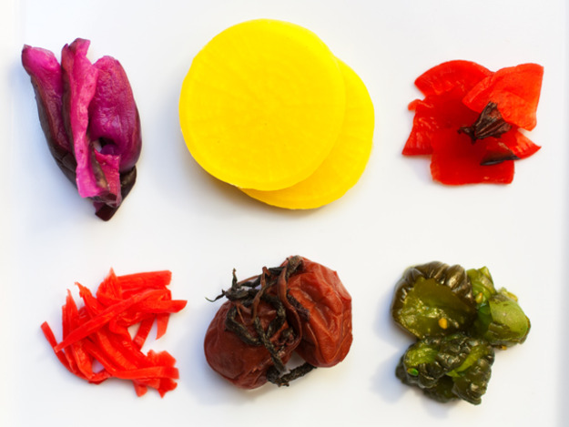

Japanese Tasty Gormet Pickles
In a storage container stir together the vinegar, salt, sugar, chile and zest until the sugar is dissolved. Taste for balance.
Pour about a 1/4 of the pickling blend into a smaller container. This is where you'll pickle the radishes so their color won't tint the other vegetables. The turnips and carrots go into the larger container.
Chill 30 minutes up to a couple of hours. Drain before serving.
Spear the pickles with picks -- set them in small shallow bowls to show off colors.
